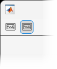

Toolbar
Toolbar UI component
- 
Description
A toolbar UI component displays a horizontal list of buttons at the top of a
figure window. Use the Toolbar object to modify the appearance and behavior
of a toolbar after you create it.
Creation
Create a toolbar in a figure using the uitoolbar function.
Properties
Color
Background color, specified as an RGB triplet, a hexadecimal color code, or one of the color options listed in the table.
RGB triplets and hexadecimal color codes are useful for specifying custom colors.
An RGB triplet is a three-element row vector whose elements specify the intensities of the red, green, and blue components of the color. The intensities must be in the range
[0,1]; for example,[0.4 0.6 0.7].A hexadecimal color code is a character vector or a string scalar that starts with a hash symbol (
#) followed by three or six hexadecimal digits, which can range from0toF. The values are not case sensitive. Thus, the color codes"#FF8800","#ff8800","#F80", and"#f80"are equivalent.
Alternatively, you can specify some common colors by name. This table lists the named color options, the equivalent RGB triplets, and hexadecimal color codes.
| Color Name | Short Name | RGB Triplet | Hexadecimal Color Code | Appearance |
|---|---|---|---|---|
"red" | "r" | [1 0 0] | "#FF0000" |
|
"green" | "g" | [0 1 0] | "#00FF00" |
|
"blue" | "b" | [0 0 1] | "#0000FF" |
|
"cyan"
| "c" | [0 1 1] | "#00FFFF" |
|
"magenta" | "m" | [1 0 1] | "#FF00FF" |
|
"yellow" | "y" | [1 1 0] | "#FFFF00" |
|
"black" | "k" | [0 0 0] | "#000000" |
|
"white" | "w" | [1 1 1] | "#FFFFFF" |
|
This table lists the default color palettes for plots in the light and dark themes.
| Palette | Palette Colors |
|---|---|
Before R2025a: Most plots use these colors by default. |
|
|
|
You can get the RGB triplets and hexadecimal color codes for these palettes using the orderedcolors and rgb2hex functions. For example, get the RGB triplets for the "gem" palette and convert them to hexadecimal color codes.
RGB = orderedcolors("gem");
H = rgb2hex(RGB);Before R2023b: Get the RGB triplets using RGB =
get(groot,"FactoryAxesColorOrder").
Before R2024a: Get the hexadecimal color codes using H =
compose("#%02X%02X%02X",round(RGB*255)).
Interactivity
Setting this property has no effect on objects of this type.
Callbacks
Callback Execution Control
Parent/Child
Parent object, specified as a Figure object. If a parent figure
is not specified, then MATLAB calls the figure function to create one that serves
as the parent.
You can move a Toolbar object to a different figure by setting
this property to the target Figure object.
Toolbar children, returned as an empty
GraphicsPlaceholder or a 1-D array of component objects. The
children of Toolbar objects are PushTool and
ToggleTool objects.
You cannot add or remove children using the Children property.
Use this property to view the list of children or to reorder the children. The order
of the children in this array reflects the right-to-left order of the tools displayed
in the toolbar. Meaning that the right-most tool is at the top of the list and the
left-most tool is at the bottom of the list. For example, this tool order returned by
the Children property indicates that the push tool appears to the
left of the toggle tool in the
toolbar.
toolOrder = tb.Children
toolOrder = 2×1 graphics array: ToggleTool PushTool
To add a child to this list, set the Parent
property of the child component to the Toolbar
object.
Objects with the HandleVisibility property
set to 'off' are not listed in the Children
property.
Visibility of object handle, specified as 'on', 'callback', or 'off'.
This property controls the visibility of the object in its parent's list of children. When an
object is not visible in its parent's list of children, it is not returned by functions
that obtain objects by searching the object hierarchy or querying properties. These
functions include get, findobj, gca, gcf, gco, newplot, cla, clf, and close. The
HandleVisibility property also controls the visibility of the
object’s handle in the parent figure's CurrentObject property.
Objects are valid even if they are not visible. If you can access an object, you can set
and get its properties, and pass it to any function that operates on
objects.
| HandleVisibility Value | Description |
|---|---|
'on' | The object handle is always visible. |
'callback' | The object handle is visible from within callbacks or functions invoked by callbacks, but not from within functions invoked from the command line. This option blocks access to the object at the command line, but allows callback functions to access it. |
'off' | The object handle is invisible at all times. This option is
useful for preventing unintended changes to the UI by another
function. Set the HandleVisibility to
'off' to temporarily hide the handle during
the execution of that function. |
Identifiers
This property is read-only.
Type of graphics object, returned as 'uitoolbar'.